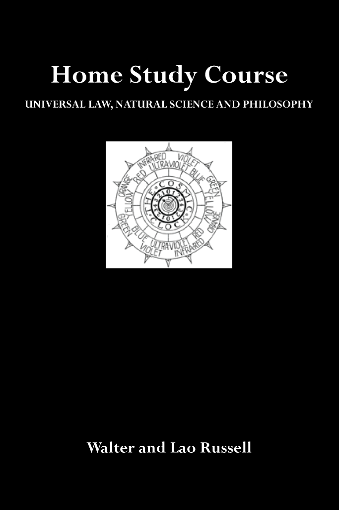

HOME STUDY COURSE¶
Universal Law, Natural Science and Philosophy — Third Edition (1950–1952) by Walter and Lao Russell


Cover of the GEOMETOR Digital Edition featuring Walter Russell’s Cosmic Clock emblem.¶
Complete digital edition of the 12 Units (48 Lessons) and 102 diagram plates (Figs. 1–180) of Walter and Lao Russell’s Home Study Course in Universal Law, Natural Science and Philosophy, enhanced with GEOMETOR parametric vector reconstructions of the core cosmogonic plates.
Conspectus of Units & Lessons¶
Unit I (Lessons 1–4): Meditation Scientifically Explained - LESSON NUMBER 1 MEDITATION SCIENTIFICALLY EXPLAINED - LESSON NUMBER 2 Continuation of MEDITATION SCIENTIFICALLY EXPLAINED FURTHER CONSIDERING TECHNIQUE - LESSON NUMBER 3 Continuation of MEDITATION SCIENTIFICALLY EXPLAINED - LESSON NUMBER 4 HOW TO MEDITATE AND QUESTIONS ANSWERED CONCERNING MEDITATION
Unit II (Lessons 5–8): Prayer & The Story of My Illumining - LESSON NUMBER 5 PRAYER SCIENTIFICALLY EXPLAINED THE POWER OF PRAYER - LESSON NUMBER 6 Continuation of PRAYER SCIENTIFICALLY EXPLAINED RELATIONSHIP OF PRAYER TO MEDITATION - LESSON NUMBER 7 THE STORY OF MY ILLUMINING - LESSON NUMBER 8 QUESTIONS AND ANSWERS CONCERNING MEDITATION, PRAYER AND COSMIC CONSCIOUSNESS
Unit III (Lessons 9–12): First Principles & This Sexed Electric Universe - LESSON NUMBER 9 FIRST PRINCIPLES - LESSON NUMBER 10 THIS SEXED ELECTRIC UNIVERSE - LESSON NUMBER 11 HOW TO THINK - THINKING SCIENTIFICALLY EXPLAINED - LESSON NUMBER 12 ANSWERS TO STUDENTS QUESTIONS
Unit IV (Lessons 13–16): Mind, Motion & Man Must Know Man - LESSON NUMBER 13 PRELUDE - LESSON NUMBER 14 - LESSON NUMBER 15 MAN MUST KNOW MAN - LESSON NUMBER 16 ANSWERS TO STUDENTS QUESTIONS WHO WANT TO “KNOW WHAT TO DO ABOUT IT”
Unit V (Lessons 17–20): The Fulcrum, The Lever & The Mystery of Life and Death - LESSON NUMBER 17 WE ADD ONE MORE IDEA–THE FULCRUM AND THE LEVER - LESSON NUMBER 18 FIRST STEPS TOWARD EXPLAINING THE SUPREME MYSTERY OF LIFE AND DEATH - LESSON NUMBER 19 CONTINUING THE MYSTERY OF LIFE AND DEATH - LESSON NUMBER 20 STUDENTS DEEPER QUESTIONS ANSWERED
Unit VI (Lessons 21–24): Deeper Thoughts of Life, Death & Spiritual-Physical Unity - LESSON NUMBER 21 DEEPER THOUGHTS OF LIFE AND DEATH - LESSON NUMBER 22 - LESSON NUMBER 23 CONFUSION OF IDEAS REGARDING SPIRITUAL AND PHYSICAL - LESSON NUMBER 24 QUESTIONS FROM STUDENTS
Unit VII (Lessons 25–28): Simplicity, Sound, Silence & Wave-Vibrations - LESSON NUMBER 25 WE STILL SEARCH FOR SIMPLICITY - LESSON NUMBER 26 SOUND, SILENCE AND WAVE-VIBRATIONS - LESSON NUMBER 27 PREFACE - LESSON NUMBER 28 QUESTIONS CONCERNING FAITH, BELIEF AND FAITH HEALING
Unit VIII (Lessons 29–32): Electric Polarity & Reincarnation - LESSON NUMBER 29 THE SPIRITUAL SIGNIFICANCE OF ELECTRIC POLARITY - LESSON NUMBER 30 REINCARNATION - LESSON NUMBER 31 THE SUPREME MYSTERY OF THE AGES (REINCARNATION CONTINUED) - LESSON NUMBER 32 ANSWERS TO STUDENTS QUESTIONS
Unit IX (Lessons 33–36): Cosmic Knowledge & The Rise and Fall of Man - LESSON NUMBER 33 KNOWLEDGE ALONE CAN SAVE THE HUMAN RACE FROM ANOTHER DARK AGE - LESSON NUMBER 34 THE RISE AND FALL OF MAN - LESSON NUMBER 35 HARD FACTS MAN MUST FACE OR PERISH FROM THE EARTH - LESSON NUMBER 36 THE REMEDY FOR WORLD DESTRUCTION AND THE DAWN OF A NEW DAY IN HUMAN RELATIONS
Unit X (Lessons 37–40): Reincarnation Continued & Multiplication into Transcendent Beings - LESSON NUMBER 37 REINCARNATION CONTINUED from lesson 31 UNLAWFUL BELIEFS - LESSON NUMBER 38 SPIRITUAL RELATIONS AND THE RELATION OF MAN AND WOMAN TO NATURE AND TO EACHOTHER. - LESSON NUMBER 39 REINCARNATION CONTINUED THROUGH COSMIC KNOWING WE MULTIPLY OURSELVES INTO TRANSCENDENT BEINGS. - LESSON NUMBER 40 ANSWERS TO STUDENTS QUESTIONS
Unit XI (Lessons 41–44): Building the Cube-Sphere Wave-Field of Curved Motion - LESSON NUMBER 41 PRELUDE - LESSON NUMBER 42 ONE MORE STEP TOWARD BUILDING THE CUBE-SPHERE WAVE-FIELD - LESSON NUMBER 43 WE CONTINUE THE CUBE-SPHERE OF THE FOUR DIMENSIONAL UNIVERSE OF TIME AND CURVED MOTION - LESSON NUMBER 44 ANSWERS TO STUDENTS QUESTIONS
Unit XII (Lessons 45–48): As on Earth So in Heaven & The Making of Matter - LESSON NUMBER 45 PRELUDE TO LAST FOUR LESSONS - LESSON NUMBER 46 AS ON EARTH SO IS IT IN HEAVEN - LESSON NUMBER 47 WE NOW CONSIDER THE MAKING OF MATTER - LESSON NUMBER 48 THE SUPREME QUESTION AND THE SUPREME MYSTERY OF CREATION